重さ
116g
202g
427g
225g
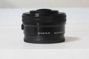

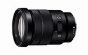
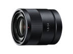
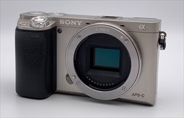
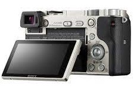
| SEL1855 | SEL55210 V.02 | SIGMA19 V.01 | SEL35F18 V.01 | |
| 種類 | 18-55mm | 55-210mm | 単焦点19mm | 単焦点35mm |
| F値 | F3.5-5.6 | F4.5-6.3 | F2.8 | F1.8 |
| 手振れ補正 | 有り | 有り | なし | 有り |
| 最短撮影距離 | 0.25m | 1m | 0.2m | 0.3m |
| 寸法（Filter径） 重さ |
62(49)x60mm 194g |
64(49)x108mm 345g |
61(46)x46mm 160g |
63(49)x45mm 154g |
| 価格コム | 24,472円 | 28,950円 | 15,168円 | 38,199円 |
| 写真 | 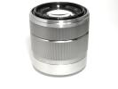 |
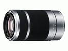 |
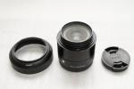 |
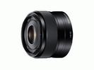 |
| SELP1650 V.01 | SEL50F18 V.02 | SELP18105 V.01 | SEL24F18Z | |
| 種類 | 16-50mm | 単焦点50mm | 18-105mm | 単焦点24mm |
| F値 | F3.5-5.6 | F1.8 | F4 | F1.8 |
| 手振れ補正 | 有り | 有り | 有り | なし |
| 最短撮影距離 | 0.25-0.3m | 0.39m | 0.45-0.9m | 0.16m |
| 寸法（Filter径） 重さ |
65(40.5)x30mm 116g |
62(49)x62mm 202g |
78(72)x110mm 427g |
63(49)x65.5mm 225g |
| 価格コム | 27,500円 | 26,499円 | 49,000円 | 72,000円 |
| 写真 |  |
|
 |
 |
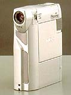
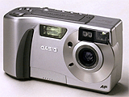
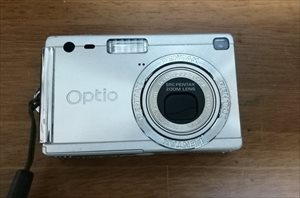
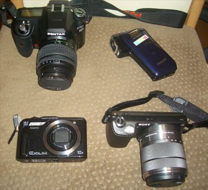